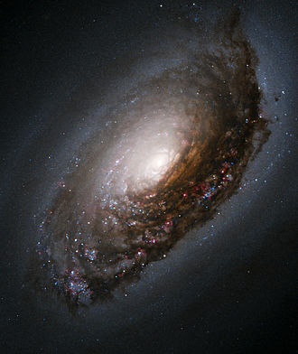

Membuat Layout Satu Kolom
Galaksi adalah sebuah sistem masif yang terikat gaya gravitasi yang terdiri atas bintang, gas dan debu medium antarbintang, dan materi gelap–komponen yang penting namun belum begitu dimengerti. Kata galaksi berasal dari bahasa Yunani galaxias, yang berarti "seperti susu," yang merujuk pada galaksi Bima Sakti.
